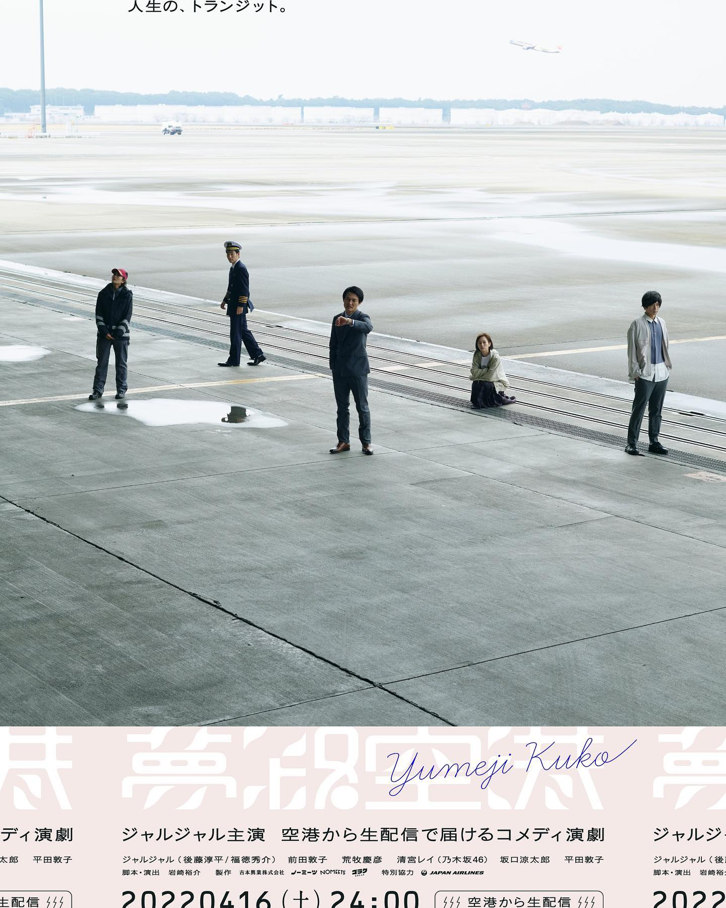

MOVIE
ジャルジャルさん主演のオンライン演劇 ｢夢路空港｣

.
【my work】
ジャルジャルさん主演のオンライン演劇
｢夢路空港｣
メイキングカメラマンとしてリハーサルから当日までカメラを回させてもらっています。
深夜、誰もいない空港を貸し切ってのオンライン演劇。
｢夢｣をテーマにした、誰もがどこか思い当たる瞬間のある、ヒューマンコメディになっています。
一体どんなことになるのか想像もつきませんが、キャストやスタッフの皆さんの熱量や想いが伝わるよう、全力で裏回ししていきます💪
https://no.meets.ltd/yumejikuko/story.html
4月16日(土)の24時
※17日の0時
から配信開始です！
アーカイブも残りますので、ぜひぜひ見ていただければ嬉しいです🥰
(特典付きチケットを買っていただけると、森川が必死こいて回したメイキング映像も見られるので、もしよろしければ…笑)
配信開始まであと2日！
お楽しみに！！
#ノーミーツ
#吉本興業
#夢路空港
#石川県
#小松空港
#ジャルジャル
#前田敦子
#乃木坂46
#清宮レイ
#荒牧慶彦
#坂口涼太郎
#平田敦子